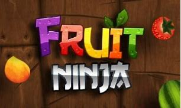
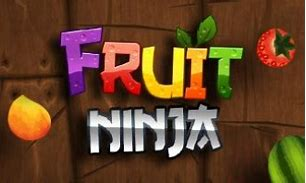

"모바일 게임"이라는 주제가 탄생하게 된 것은 2000년도 초기 스마트폰에 터치스크린 기능이
도입되어 스크린 터치를 통해 간단한 조작을 할 수 있을 때 생기기 시작했습니다.
2010년도 초기에는 스마트폰의 사양이 낮은점과 사람들의 조작이 아직 어려운 시기이기 때문에
 

앵그리버드, 후르츠 닌자와 같이 간단한 미니게임이 모바일 게임시장을 점유하다
사양의 안정화와 더불어 "모바일 게임"이 하나의 주제로 인정 받으며 여러 사람이 관심이 쏠리게 되고
점차 사람들의 관심이 많아지고 그만큼 터치스크린에 적응하여 스마트폰 조작이 익숙해지자.
>메이플스토리나 아스팔트와 같이 콘솔or컴퓨터 게임을 모바일로 이식시킨 게임들이 상당 수 생겨 나게 되었습니다.